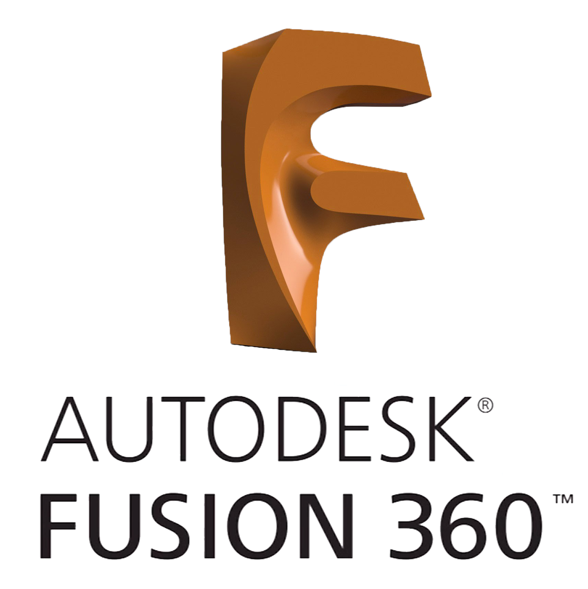
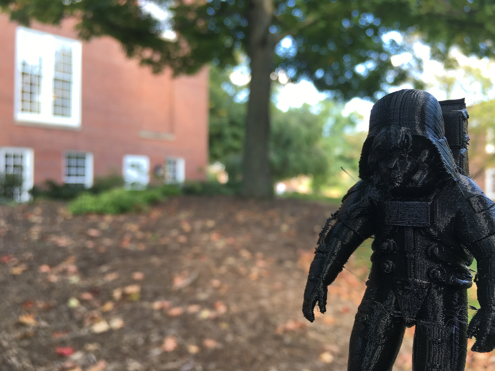

3D Printing
3 - 10 October 2018
This week, we worked with the 3D printers to make three different projects. One allowed us to experiment with an Autodesk program
called Meshmixer. We also worked with Fusion 360 to make our other projects, one was any object that could not be made with
subtractive manufacturing (a.k.a. a drill, basically), and the other was any useful object. 3D objects are stored in .stl files,
which stands for stereolithography.


Assignment 1: Describe the rules and limitations for these 3D Printers
The printers in our Makerspace are Makerbot Replicator 5th Gen 3D Printers. They use a process called Fused Filament Modeling (FFM),
also known as Fused Deposition Modeling (FDM) to print 3D models. They print with plastic filament which is heated until is is
liquefied, then it is extruded, and as it is extruded it cools into its shape. This is different from another kind of printer we
have, a Formlabs printer, which uses ultraviolet radiation to harden resin. While both printers take the same amount of time, items
printed on the Makerbot printers are generally less durable because they are made of plastic with infill instead of solid resin, but
items printed on the Formlabs printer are far more expensive to print (over 8 times more expensive!), and they require more post-
production work, like an alcohol bath. The Formlabs printer does result in superior resolution, however.
Some of the constraints of the Makerbot printers are that items cannot be printed with any upward angle less than 45 degrees. Below
that threshold, the plastic which is printed falls down, hardening as it falls,
which just becomes a mess. You should also place things which are more detailed closer to the base so they maintain their resolution.
Assignment 2: Meshmixer
For this project, we 3D scanned our heads, then used Meshmixer to put our heads onto another object. I chose to put my face on
Darth Vader's face. On Thingiverse, I found a file someone had created with Darth Vader's head on an astronaut's body, which I
thought was pretty cool, so I used that file as the base for my creation. I found that file at
https://www.thingiverse.com/thing:1090470. You can find the .stl file below. Next, I imported the .stl file of my head into
Meshmixer and manipulated it until my face covered Vader's face. Finally, I 3D printed the file.
I think my Meshmixer project came out fairly well. If I were to try to do something like this again, I would probably find a file
that was entirely Vader, not just Vader's head on an astronaut like this one was, and just replace Vader's head with mine, because
that would probably look better and less weird than what turned out with my face coming out of the front of Vader's helmet. Or, I
could have found a file of Vader with the helmet off and puut my face in instead, and then I would have had Vader's mouthpiece in
front of my face, so that would be recognizable as both me and as Vader. However, I do think that what I did print turned out well,
and I do really like it.

